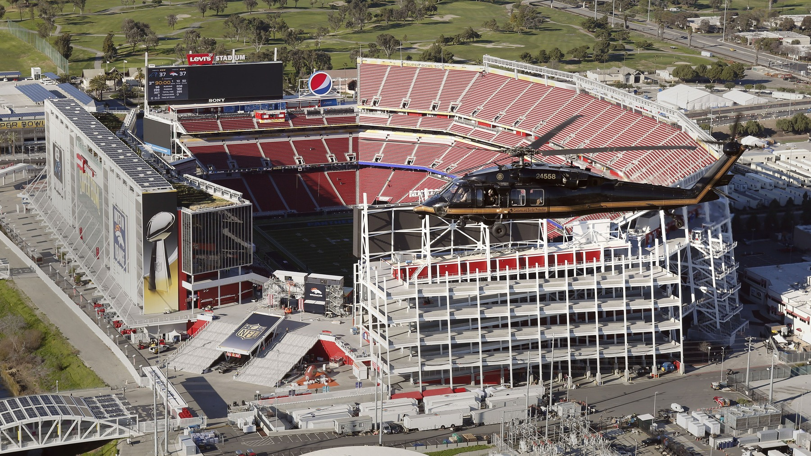

Christian Kirk Finally Practiced, and Mike Evans Didn't
We're five and oh. I spent Thursday night sitting in the driveway with the engine off, because the receiver we've been waiting on since July finally walked out, and the one we can't lose sat down.

I didn't go inside. The group chat was already three screens deep, and if I walk into the kitchen I have to say the record out loud for somebody who only wants the record. Five and oh. That's the whole conversation she wants. I stayed sitting there after I got off the 101, fog on the roof of the car, garage light on its timer, and I read the two names until the screen dimmed.
Kirk practiced.
Evans didn't.
Christian Kirk has been a rumor with a calf since the first practice of camp in July. Setbacks. Injured reserve. A 21 day window they finally opened on Thursday, and he was limited, which is the first time he's been out there with the team since that calf grabbed him. Kyle said Monday he wasn't expecting him this week. Then he said Kirk had a real good week and an awesome weekend, and Thursday was the first day back. Kirk said he got over the hump and felt like himself again.
I almost screenshotted that.
I didn't. I've been burned by "felt like myself" on this roster since Ricky Pearsall's knee ended his year before it started, and I'm not building Monday night's lineup off one limited session. The window is open. He took a step. A slant at Levi's on Monday is a different sentence, and I'm not writing it yet.

I'm glad he's out there. I am. We've been short a grown receiver for months. De'Zhaun Stribling's ankle went to surgery. Demarcus Robinson is on the list with his own ankle, and he isn't back until after the bye. Deebo hurt the hamstring in Seattle and Kyle doesn't expect him until the first game after the bye, November 8 at the earliest. I watched that from the couch. I stood up when Deebo came off and I didn't sit back down for a while. The room got smaller in one snap, and we were still five and oh, which is the kind of sentence that makes you superstitious if you've lived here long enough.
So Thursday should've felt like a gift.
Kirk in a red jersey, even limited, is the first piece of good receiver news I've had in weeks that wasn't just Brandin Cooks being in the building. Cooks is on the 53. He's catching balls. I'm grateful and I'm also a little sick that gratitude is where we are.
Then I got to Evans
Two broken ribs. He's been playing through those, because of course he has, because that's what we asked the man to do when we signed him. Now the Achilles is sore, and he didn't practice Thursday. Kyle called it sore. That's the word this staff uses when they want you to keep your shirt on.
I kept my shirt on.
I also know a guy with two broken ribs and a sore Achilles who skips Thursday is not a guy I'm penciling into Monday until I see him finish a practice. Friday. Saturday. Whenever they let the rest of us look. Until then he's a question sitting on top of the best record in the sport, and questions on top of five and oh are how this franchise has ruined Septembers I can still name.
If he sits, look at who's left on the 53 and actually healthy. Brandin Cooks. Jordan Watkins. Jacob Cowing. That's the receiver room for a Monday night home game. I said it out loud in the car so I'd hear how thin it sounded.
It sounded thin.
Purdy has been carrying rooms like this all year, and the offense has kept scoring when the names on the route sheet look like a practice squad. I believe him. I also remember what it felt like when the one tall matchup we brought in for exactly this month didn't trot out. You can win with Cooks and Watkins and Cowing. I'd rather not find out on national television whether we have to.
Kirk can be activated inside the 21 days. I'm not putting him in the game until the calf stays quiet for a week. I've watched this building open a window and then spend the next month explaining the setback. He said he felt like himself. Good. Do it again today. Do it again Saturday. Then we'll talk about Washington.
They're here Monday at 5:15. The week sits on the schedule hub. Who we thought we had in August is on the depth chart, which you should read with Thursday's list in the other hand. When the feed catches up, the statuses live on the injury report. Everything else is on the 49ers hub.
The garage light clicked off while I was still sitting there. I went inside. She asked if we won. I said the game's Monday. She asked if everybody's healthy.
I laughed once, the bad kind, and I told her Kirk practiced.
I still haven't told her about Evans.
More coverage: 49ers · NFL · Bay Area Sports Blog home